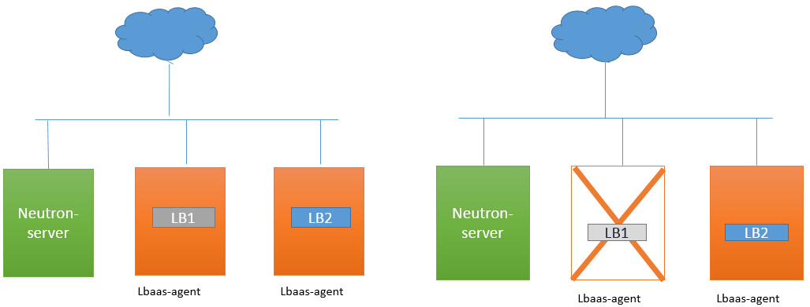
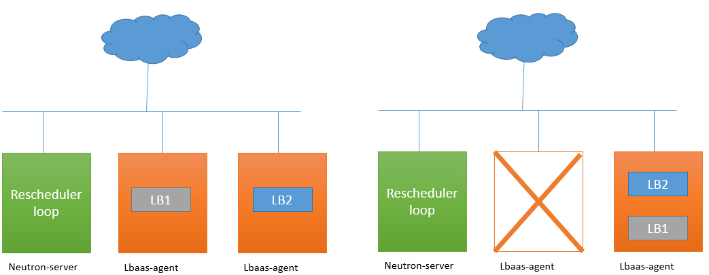
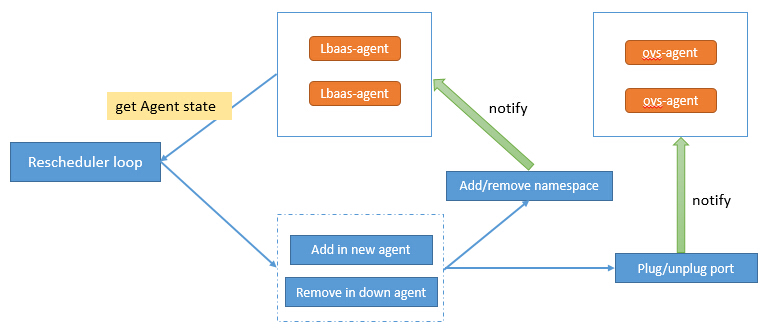

Neutron的LBaas服务是OpenStack网络组件的高级特性，也是Horizon支持的可选配置，目前LBaas比较通用的driver是Haproxy，通常我们都只在网络节点部署一个neutron-lbaas-agent，一个agent肯定无法实现高可用，但是即便我们部署多个agent，agent之间是没有协调的，某个agent挂了之后，其上面的负载均衡器就停止了。本文讨论的是Haproxy下LBaas服务的高可用方式。
如上面所说并结合下图，LB1和LB2是分别位于不同agent上的两个负载均衡器，LB1的agent宕掉后，LB1便不再提供服务，也不会自动重建，这样我们就应该很清楚的了解目前已知的问题了。
如果我们能够感知agent宕掉，并把LB1迁移到其他可用的agent上，让LB1能够继续提供服务，过程如下图。
关于负载均衡器，可以先读一下之前的一篇文章( LBaas部署及实现原理 )做一些了解，我们可以得知一个负载均衡器中的VIP对应的是操作系统的namespace，VIP的Port是namespace中一块虚拟网卡，这块虚拟网卡要和Openvswitch连接，那么就可以得知构建一个负载均衡器需要lbaas-agent与openvswitch-agent协同工作才可以。
如要感知lbaas-agent的状态，我们必须不断的收集他的活跃状态，这个事情neutron已经做了，除此之外我们还需要在neutron-server上构建一个Rescheduler loop评测当前所有lbaas-agent的状态，如果有agent宕了，则触发迁移事件。迁移过程需要lbaas-agent与openvswitch-agent共同参与，过程如下图。
当宕掉的lbaas-agent重新被修复启动后，这个宿主系统上已有的namespace、tap-device、ovs-port都需要被删除掉，否则Neutron中将会出现大量重复的负载均衡器。
上面提到的方案在社区中有相应的BP lbaas-ha-agent ，不过Code-review并没有通过，但是相关代码可借鉴来参考一下。
细心的朋友们会发现上面我们提到的方案，并不能实现真正的高可用，就是说一旦出错他需要一个感知错误并重建的时间，一旦某个agent上的负载均衡器很多，这个恢复时间还是很长的。所以社区有个另外一个BP lbaas-ha-haproxy ，这个BP还在草案设计中，它旨在提供服务不中断的真正高可用。